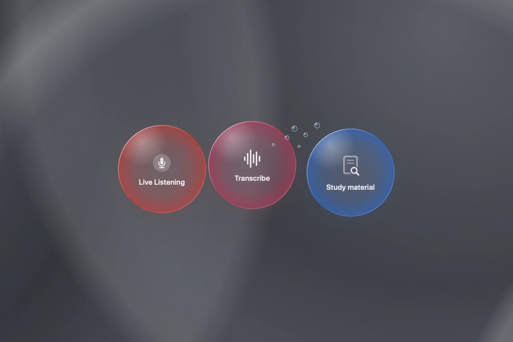
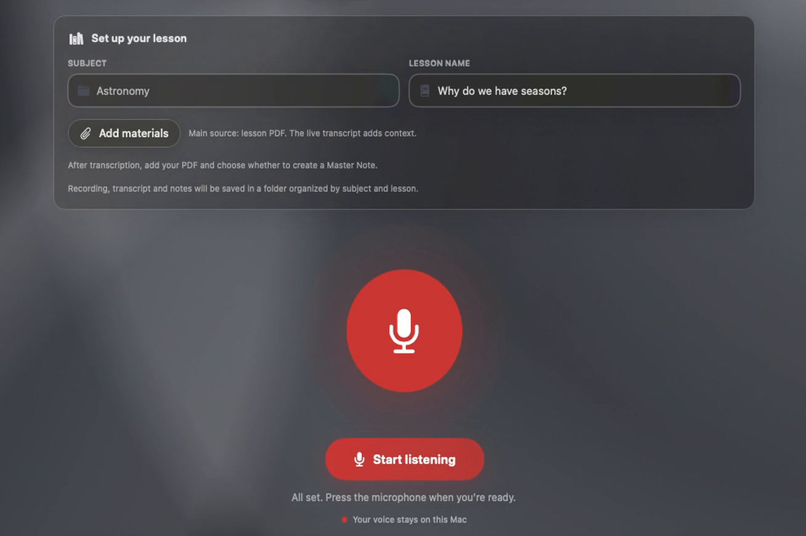
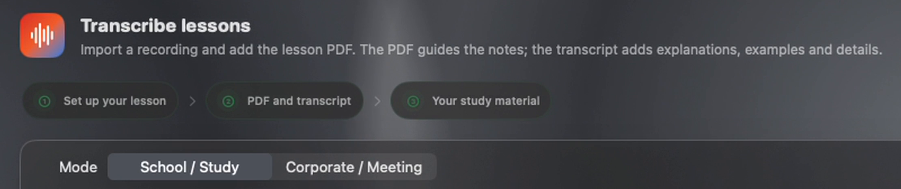
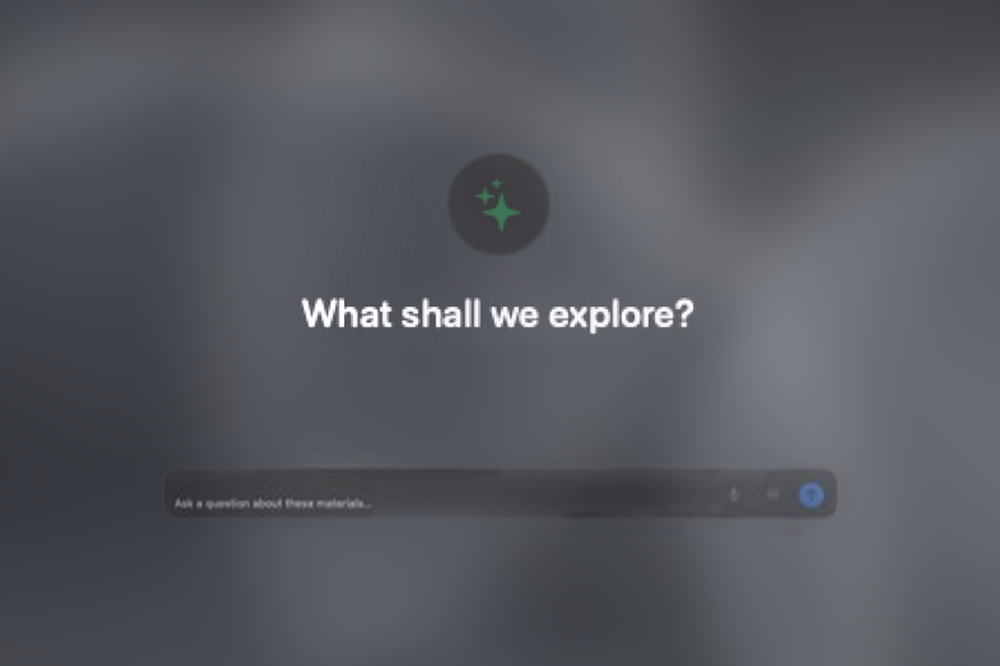
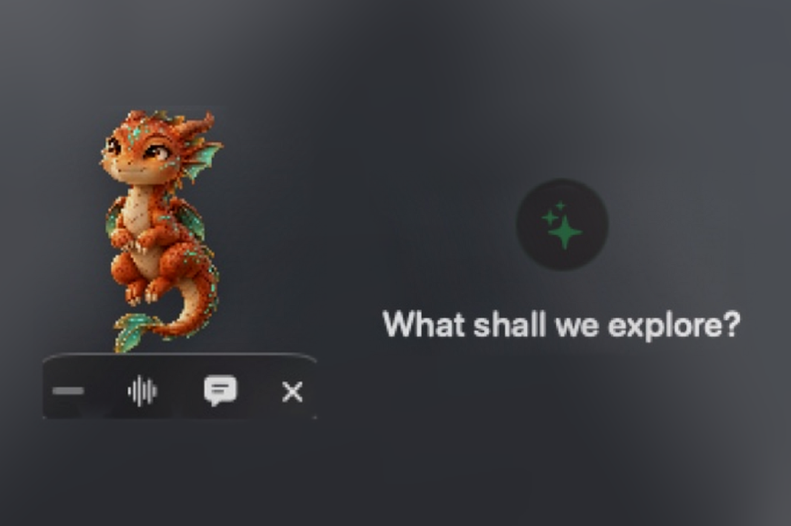

01 · Home
Three workspaces, one home.
Lessons are saved by subject, with their files.
- Live Listening
- Transcribe
- Study material

01 · Home
Lessons are saved by subject, with their files.

02 · Live Listening
Hit the mic: the transcript builds up in short chunks during the lecture.

03 · Transcribe
Import a recording; it is transcribed on this Mac.

04 · Study material
Transcript, PDF slides and extra files become a Master Note or meeting report, exported to Word.

05 · Assistant
Ask about a lesson or meeting, by text or voice.

06 · The pet
An orange companion that floats above other apps. Hover it for Chat or Voice.
Iteration
On a real lecture, generation stalled and diagrams came out as blurry clippings. Now it resumes on its own and rebuilds diagrams as editable elements.
Status
Installed and running on my Mac. Next: a clean-Mac test, a signed build and a first GitHub release.
Stack
As the code grew too complex to handle alone, development continued with AI help. I designed the app, directed the work and tested everything.
Contact
Questions about Lyceum are welcome.